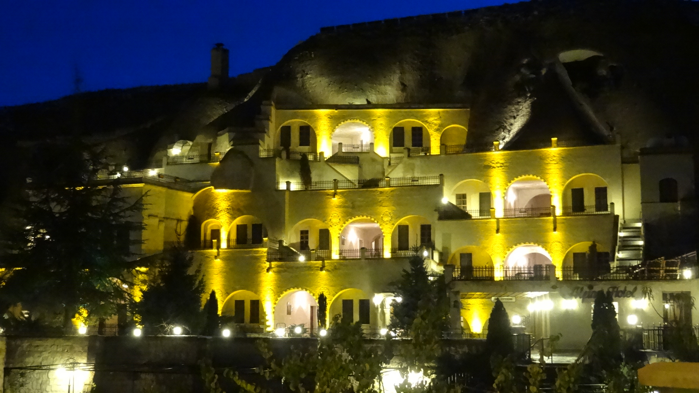

Kapadookia
Kapadookia

Kapadookia
Kalju sees

Kapadookia

Hotell Alfina
Tuba, kus ma peatusin
Kapadookia
Kapadookia
Kapadookia
Kalju sees
Kapadookia
Hotell Alfina
Tuba, kus ma peatusin
Minu lemmikkohaks on Türgi. Ma ise olen käinud Kapadookias, Istanbulis ja sellele lähedastel Printsi saartel.
Kapadookias ma käisin detsembris, siis ei olnud reisihooaeg ja seal polnud palju inimesi, mille üle mul oli hea meel, muidu ei saaks rahulikult kõike näha.
Täpsemalt ma peatusin Urgupis, Alfina hotellis, mis on rajatud otse kaljusse. See näeb väga äge välja ja öösel on eriti ilus. Kuna hotellis peatus vaid veel üks inimene, siis saingi endale upgrade'i ja mind mahutati ühte suurde koopa.
Sealne loodus on ainulaadne, sellist ma pole kuskil rohkem näinud. Mis teeb seda ebatavaliseks on kaljumassiivid, mis on erineva ja eripärase kujuga. Seda käisingi Göreme vabaõhu muuseumis vaatamas.
Üksainus asi, mis ma kahetsen, et jäi tegemata, on õhupalliga sõit. Tollel ajal pidasin seda liiga kalliks lõbuks. Nüüd aga sellele mõeldes, oleks kindlasti pidanud seda võimalust kasutama.
Kui juhtute olema Istanbulis, siis kindlasti tasuks minna Printsi saartele. Kokku neid on üheksa, kõige suurem nendest on Büyukada.Pääseb sinna, näiteks Aasia osast, kas kiirpaadiga (u 0,5h) või suurema ja aeglasema laevaga (u 1,5h)
Autod seal ei ole lubatud, nii et ringi tuleb liikuda kas jalgsi, jalgrattaga või hobusega.
Silma paistab ka suur hulk tänava kasse ja koeri. Päris mitmetes kohtades on neile pandud söögi- ja joogikaussid ja vahel näeb ka neile ehitatud kuute.
Kui peale pikka jalutuskäigu tekkib söögiisu, siis soovitaksin minna mingisse restorani mere ääres, kus saab nautida maitsvat kala ja ilusat vaadet.